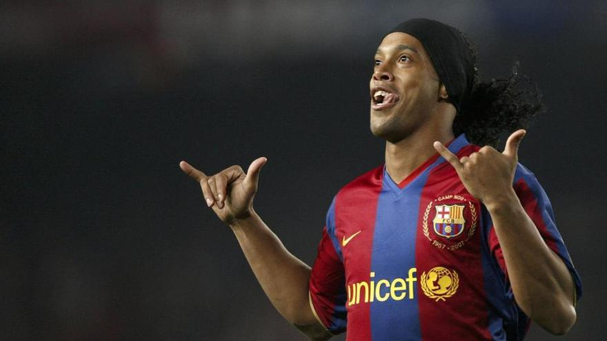

Leyendas del Club
Ronaldinho
Con el saludo del 'Shaka' y con una sonrisa de oreja a oreja, se presentaba un joven de 23 años en Barcelona el verano de 2003 para iniciar una nueva aventura como azulgrana. Ronaldinho cambiaría el rumbo de aquel Barça. Con él, el equipo recuperó el entusiasmo y las ganas de competir después de un período de sequía. El centrocampista brasileño vistió de azulgrana durante 5 temporadas, en las que ganó dos Ligas y la Champions de París.

Andrés Iniesta
Centrocampista creativo de cualidades futbolísticas extraordinarias, Iniesta destacaba por la inteligencia y el talento. Pequeño y escurridizo, su tremenda habilidad con el balón le hizo fundamental en el esquema azulgrana. No en vano es uno de los mejores jugadores de la historia del fútbol estatal. Llegó al equipo infantil azulgrana la temporada 1996/97 procedente de las categorías inferiores del Albacete: a sus 12 años, todo el mundo que lo veía jugar ya entendía que aquel chico era algo especial. Tras pasar por los equipos cadete y juvenil, debutó oficialmente con el primer equipo de la mano del técnico Louis van Gaal el 29 de octubre del 2002, cuando aún era jugador del Barça B. Aquel día el Barça venció por 0-1 el Brujas en partido de Champions League.

Xavi
Gran director de orquesta, jugaba con el mapa del terreno de juego en la cabeza, con una visión de juego soberbia para localizar los compañeros mejor posicionados y con una gran capacidad para gestionar los espacios y el tempo del juego. Llegó al equipo Alevín A del fútbol base azulgrana la temporada 1991/92 e hizo los primeros pasos como futbolista de clásico '4', pero con el paso del tiempo su posición en el terreno de juego se fue avanzando hasta a ocupar su parcela en el centro del campo, donde ha conquistado su lugar de honor en la historia del FC Barcelona. Su gran maestro y referente fue Pep Guardiola, y con los años se convirtió en su sucesor. Xavi supo asimilar con rapidez el papel de centrocampista creativo y de verdadero cerebro del equipo gracias a su mente privilegiada y una gran calidad técnica que contrarrestaba la superioridad física de sus rivales. Con él en el campo, el control del partido siempre estaba asegurado.

Ir arriba